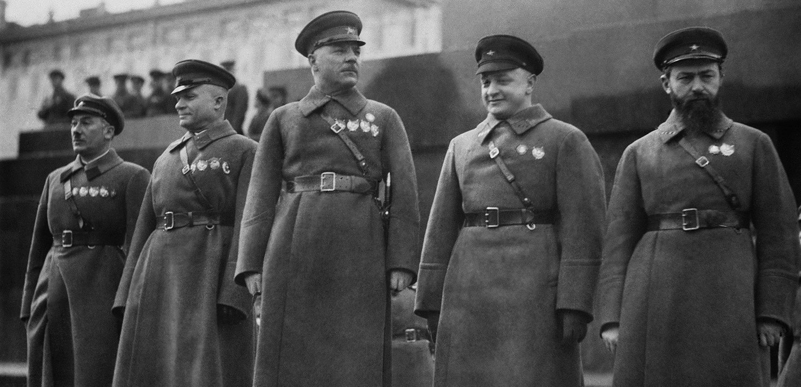
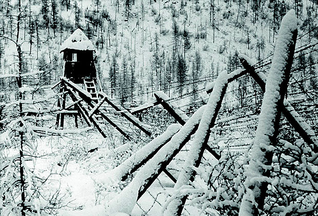

Вы живете один, родственники - в другом городе.
Вас предупредили, что вы - следующий в списках ГПУ, но сбежать вы не успели. час ночи, вы собираете вещи,
и вдруг видите в окно черный воронок. Оттуда выбегают ГПУшники и устремляются в ваш подъезд. Ваши действия?
В последнее время к вам проявляет настойчивое внимание высокопоставленный чиновник:
приглашает с семьей в гости, просит составить ему компанию в опере и на охоте. Сегодня он звонит вам и просит съездить с ним
в Москву на конференцию. Отказаться немыслимо. Согласитесь?

Вы идете на рынок. На улице, в толпе, к вам подходят двое крепких мужчин, хватают под руки и шепнув:
"Госбезопасность, молчать" волокут к машине. Ваши действия?

Вечер, вы в камере. Вся жизнь проносится перед глазами.
Вы знаете, что скоро вызовут на допрос. Как подготовите себя?